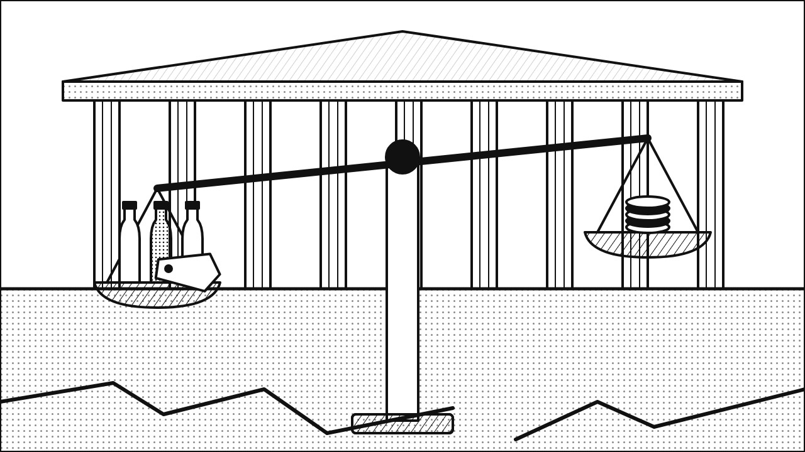
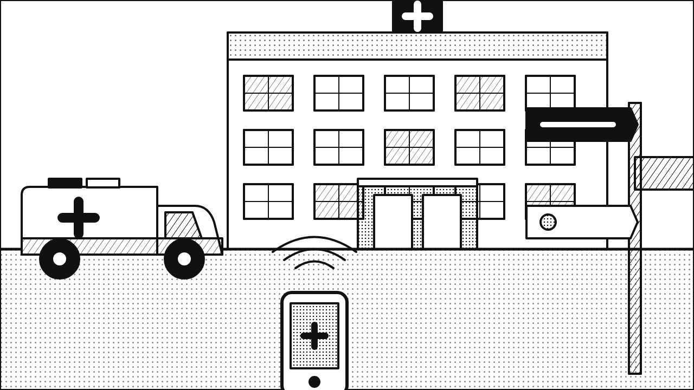
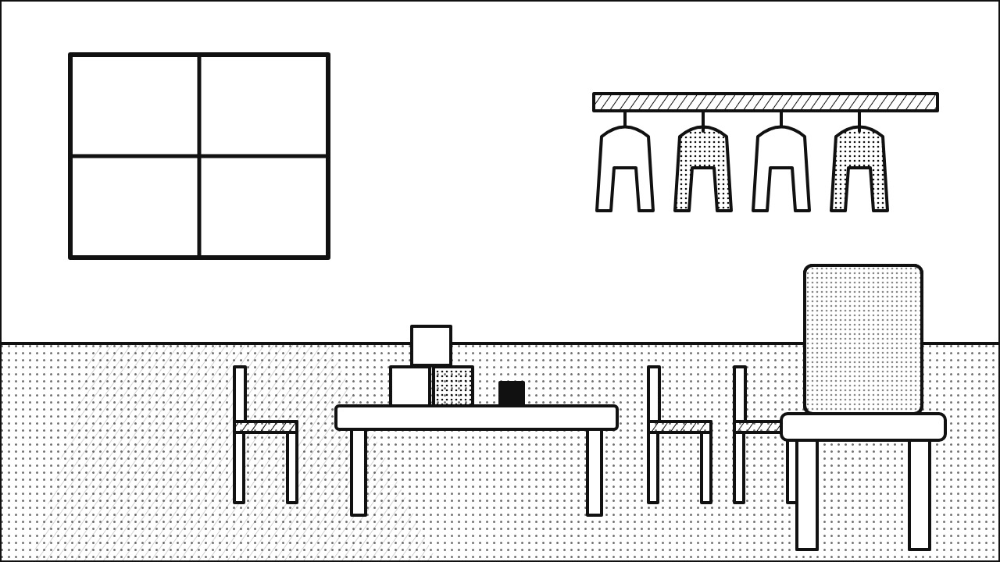
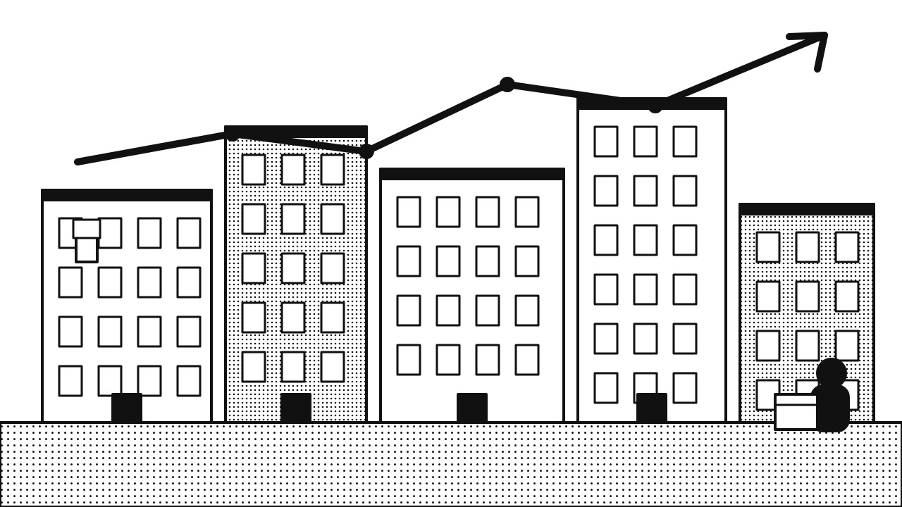
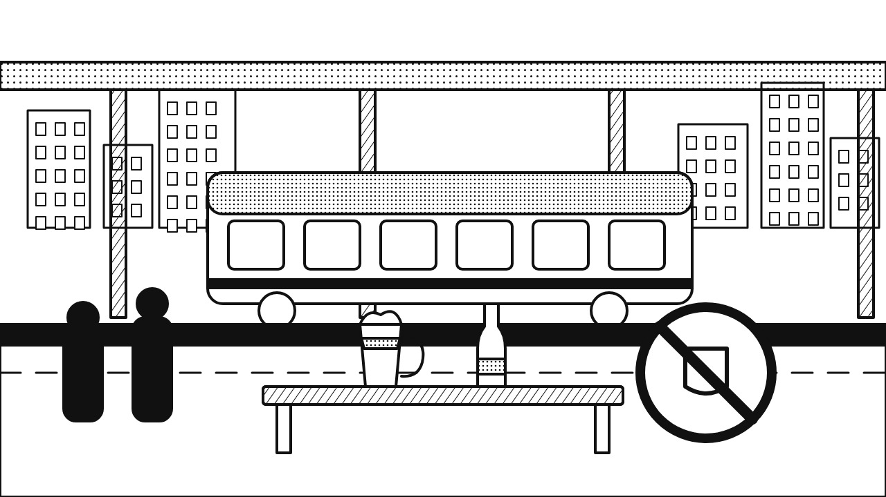
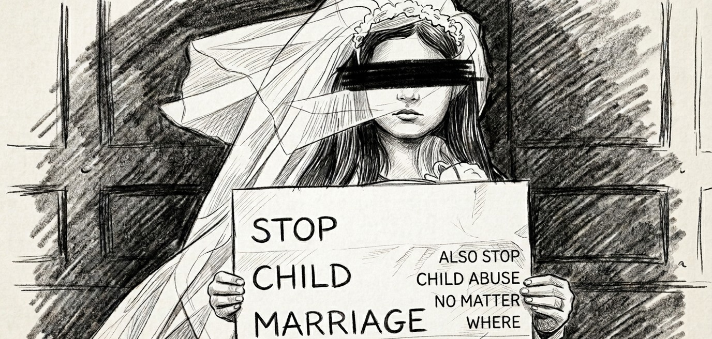
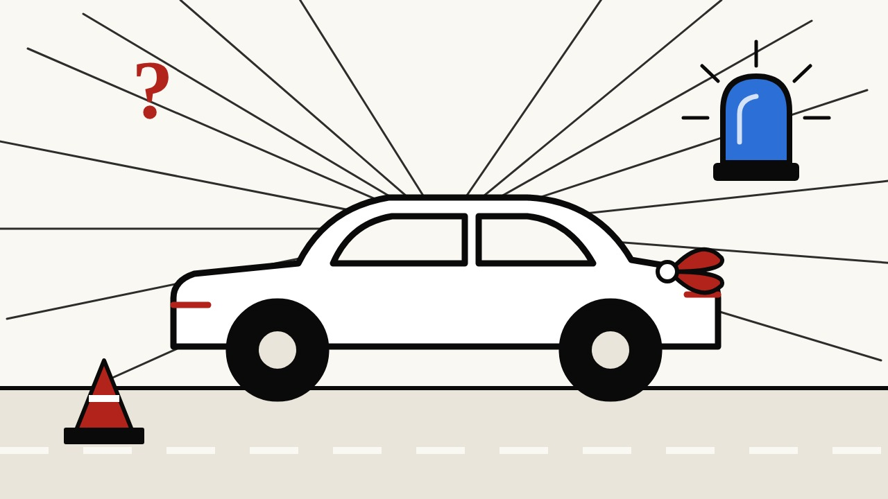

Ab heute online
Deutschland. Auf den Punkt.
Willkommen bei DoytschlandTv. Nachrichten, klar eingeordnet. Fakt und Meinung sind getrennt, die Quellen stehen dabei.
Ab heute online · Was wir machen
Nachrichten, die du prüfen kannst.
Kein Lärm, keine Schlagzeilen ohne Beleg. So funktioniert DoytschlandTv.
- 1
Morgens: das Briefing
Das Wichtigste des Tages in wenigen Minuten, zum Lesen und zum Hören.
- 2
Tagsüber: ein Thema, klar erklärt
Karussells auf Instagram und TikTok. Wenige Folien, eine Aussage, unten die Quellen.
- 3
Abends 19 Uhr: der Rückblick
Was heute wirklich passiert ist und was daraus folgt.
- 4
Du bestimmst mit
Schreib uns in die Kommentare, was wir einordnen sollen. Rente, Mieten, Wehrpflicht: Wir greifen es auf.
Zuletzt im Blick
16. Oktober 2026

Nachrichten · Fr., 16.10.Zuckersteuer im Kabinett, Plastiksteuer auf Eis: Wie stabil ist die Koalition?Illustration, KI-generiert, kein Foto
Nachrichten · Fr., 16.10.Notfallreform beschlossen: Ersteinschätzung über 112 und 116117, Zuzahlung steigt auf 15 EuroIllustration, KI-generiert, kein Foto
Nachrichten · Do., 15.10.Kita-Studie: 23 Prozent der Leitungen sehen Stellen unter nötigem NiveauIllustration, KI-generiert, kein Foto
Nachrichten · Do., 15.10.Mieten: Angebotsmieten steigen wieder stärker, plus 1,2 Prozent im QuartalIllustration, KI-generiert, kein Foto
Nachrichten · Do., 15.10.Alkoholverbot an Bahnhöfen: Was jetzt giltIllustration, KI-generiert, kein Foto
Nachrichten · Do., 15.10.Kinderehen: Wen betrifft es wirklich? Faktencheck zu acht aufgehobenen Ehen in Baden-WürttembergIllustration, KI-generiert, kein FotoNachrichten · Mi., 14.10.Nord-Stream-Prozess: Was in Hamburg beginntNachrichten · Mi., 14.10.Zuckersteuer: Kabinett billigt bis zu 32 Cent je Liter
Nachrichten · Mi., 14.10.Polizei stoppt Wagen eines Hochzeitskorsos mit gezogenen Waffen: Was in Dortmund passiert istIllustration, KI-generiert, kein Foto Kolumne · DemokratieSelbstauskunft ist keine Kontrolle: Was der Fall Christ über Beratergremien zeigtIllustration, KI-generiert, kein Foto.ErklärtSchuldenbremse und Sondervermögen
Kolumne · DemokratieSelbstauskunft ist keine Kontrolle: Was der Fall Christ über Beratergremien zeigtIllustration, KI-generiert, kein Foto.ErklärtSchuldenbremse und SondervermögenFakt
Was passiert ist, mit Quellen.
Einordnung
Warum es wichtig ist.
Haltung
Unsere Meinung, immer gekennzeichnet.
Jeden Tag ein Thema.
Täglich ein Morning Briefing, dazu Karussells auf Instagram und TikTok.